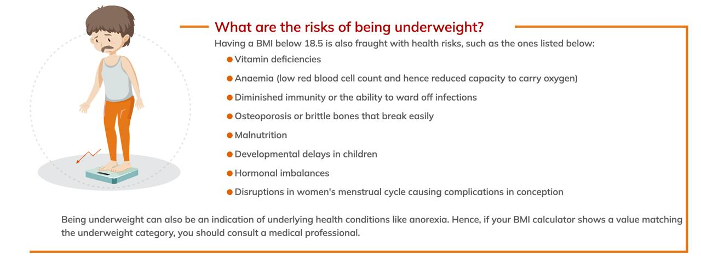
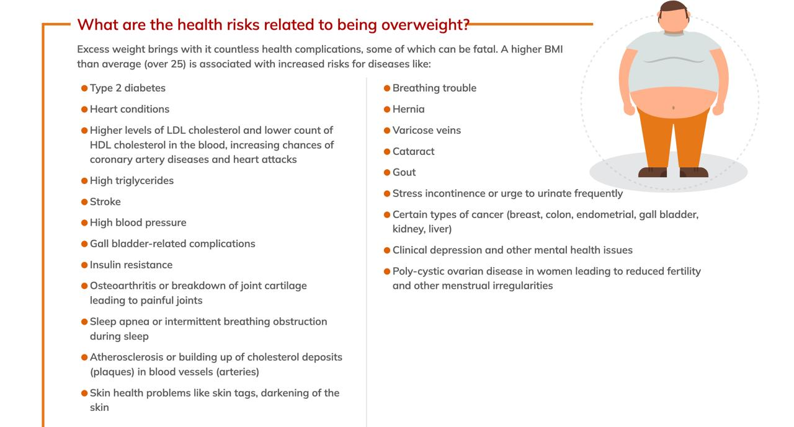

Introduction to BMI
Body mass index (BMI) is an approximate measure of your best weight for health. It is calculated by dividing your weight in kilograms by your height in metres squared (m2). BMI is intended for adults only, as children and adolescents are constantly growing. This makes it difficult to have set values for BMI cut-offs for young people. However, in adults who have stopped growing, an increase in BMI is usually caused by an increase in body fat.
What is BMI , how it is calculated for adults
For adults 20 years old and older, BMI is interpreted using standard weight status categories. These categories are the same for men and women of all body types and ages.
Being overweight or underweight can affect your health
The link between being overweight or obese and the chance you will become ill is not definite. Research is ongoing. Statistically, there is a greater chance of developing various diseases if you are overweight. For example, the risk of death rises by 20 to 30 per cent as BMI rises from 25 to 27kg/m2. As BMI rises above 27 kg/m2, the risk of death rises more steeply (by 60 per cent).

What is a healthy BMI range for children?
BMI calculations used for adults are not a suitable measure of weight for children or adolescents. BMI calculations for children and adolescents are interpreted differently from an adult's and take into account the age and sex of the child or adolescent.